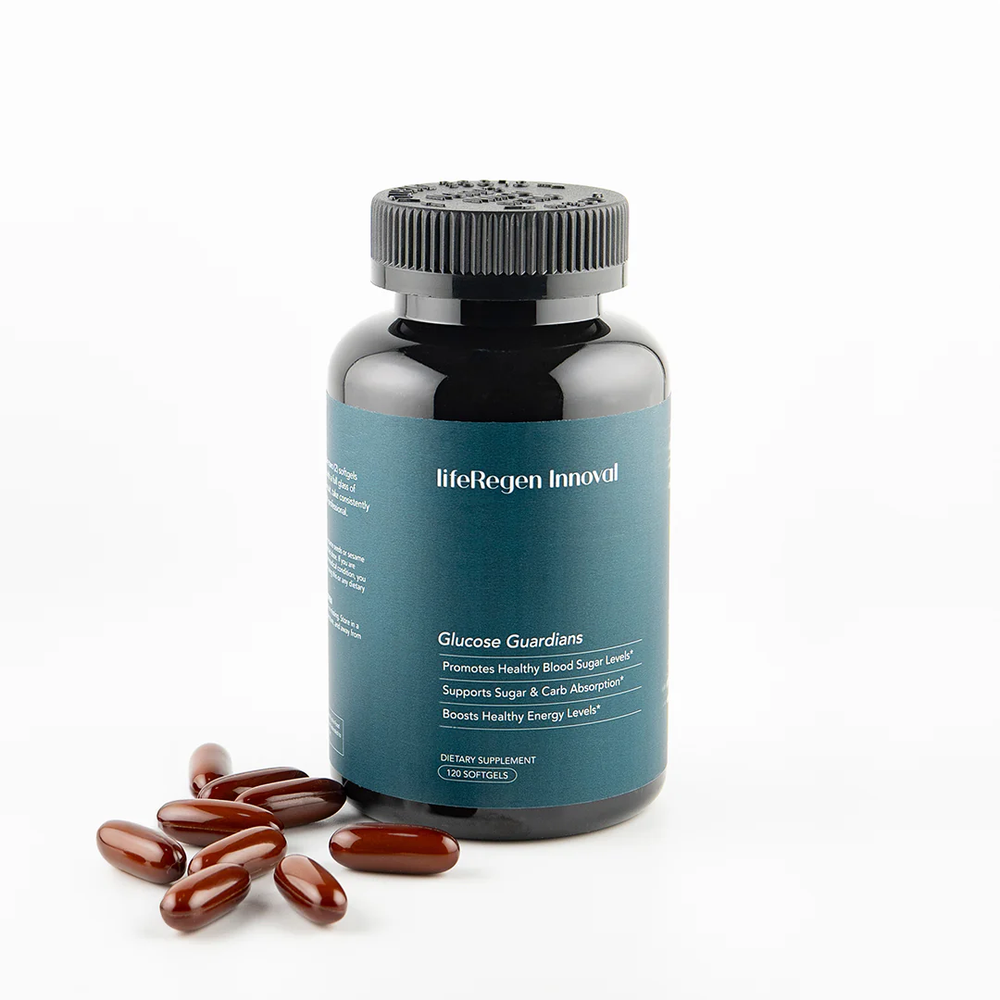

產品介紹：Innoval
Innoval是一款前沿健康產品，結合東方中藥智慧與西方尖端科技，旨在促進全身健康與抗老化功效。專為追求全方位健康支持的人士設計，Innoval提供您體內外的全面保養。


主要特點
- 促進細胞活化：幫助提升細胞再生能力，延緩老化跡象。
- 加強免疫功能：提高身體對外部威脅的抵抗力，支持長期健康。
- 抗氧化支持：減少自由基傷害，保護細胞完整性。
- 提升皮膚質量：促進肌膚緊緻和光澤，展現自然年輕。
- 全方位營養：包含多種關鍵成分，支持整體健康與活力。
使用方法
每日服用2顆，建議與餐食一起服用，以確保最佳吸收效果。
健康支持的科學基礎
Innoval由LifeRegen™專家團隊研發，融合中醫藥學與西方生物科學。它專注於提升細胞功能，從而支持全身健康。創新的配方針對人體自然老化過程，幫助改善內在機能，延緩衰老。
核心成分與作用
Innoval的配方由精選成分組成，包括：
專利混合物：腸胃道保護劑（芝麻籽油、蜂蠟）、黃柏提取物、米糠提取物。其他成分：牛明膠、甘油、水、焦糖色
為什麼選擇Innoval？
LifeRegen™ Innoval不僅僅是一種保健產品，而是健康生活方式的象徵。透過自然與科技的結合，Innoval為您的身體提供所需的養分，幫助您迎接每一天的挑戰，並以最佳狀態面對未來。
購買資訊
- 價格：US$120 ≈ NT$3800
- 購買連結：立即購買
聯絡資訊
如有任何問題或需要進一步的資訊，請聯絡我們：
- LineID：rk313131
- 電話：撥打 0937834975
- 電子郵件：zosakuo@gmail.com
結論
Innoval是促進健康與抗老化的理想選擇，幫助您展現自信與活力。立即體驗LifeRegen™ Innoval的與眾不同吧！